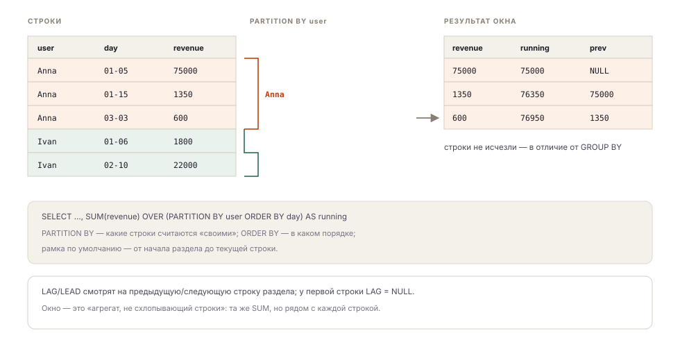

Оконные функции: агрегат, который не схлопывает строки Та же SUM — но рядом с каждой строкой, а не вместо них
GROUP BY сворачивает строки в одну на группу. Но иногда нужен и агрегат, и каждая строка: «сколько всего у пользователя» рядом с каждым заказом, «накопительная сумма по дням», «место в рейтинге». Для этого есть окна.
01Зачем это backend-разработчику
- Рейтинги и топы: топ-3 заказа на пользователя, место категории по выручке.
- Накопительные метрики: выручка с начала месяца, скользящее среднее, сравнение с прошлым заказом.
- Доли: «какой процент выручки пользователя дал этот заказ» — без второго запроса и self-join (соединения таблицы с самой собой).
- Собеседование: «чем окно отличается от GROUP BY», «ROW_NUMBER против RANK», «почему окно не работает в WHERE».
02Ассоциация-якорь: стеклянная колонка рядом
Окно — это стеклянная колонка рядом с таблицей. Строки остаются на месте, но рядом с каждой появляется значение, посчитанное по «её» окну: по отделу, по пользователю, по всему результату.
PARTITION BY задаёт, что попадает в окно; ORDER BY — порядок внутри окна. Агрегат не заменяет строки, как GROUP BY, а дописывается к ним.
03Ассоциативный ряд: восемь звеньев
- OVERобъявить окно
- PARTITION BYсвои строки
- ORDER BYпорядок внутри окна
- SUM/AVGагрегат по окну
- ROW_NUMBERномер строки
- RANKместо с пропусками
- LAG/LEADсоседняя строка
- рамкакакие строки окна
04Схема: строки не исчезают

05Как это устроено на самом деле
| Функция | Что делает | Пример |
|---|---|---|
| ROW_NUMBER() | последовательный номер 1,2,3 | топ-N по группе |
| RANK() | место с пропусками при равенстве | 1,1,3,4 |
| DENSE_RANK() | место без пропусков | 1,1,2,3 |
| SUM() OVER | сумма по окну | накопительная выручка |
| LAG/LEAD | предыдущая/следующая строка | сравнение с прошлым |
Окно не работает в WHERE
Оконные функции вычисляются на этапе SELECT — после WHERE, GROUP BY и HAVING. Поэтому
WHERE rn = 1 поверх ROW_NUMBER() нельзя:
сначала нужно посчитать окно в CTE/подзапросе, а фильтровать снаружи.
Рамка
Если вместе с агрегатом указан ORDER BY, рамка по умолчанию —
от начала раздела до текущей строки. Для «всей группы» используют
ROWS BETWEEN UNBOUNDED PRECEDING AND UNBOUNDED FOLLOWING или
OVER (PARTITION BY ...) без сортировки.
06Лаборатория: запустить и увидеть
Фрагменты файла 23_window_functions.sql.
База learning_shop, выручка заказа — quantity * price.
Шаг 1. ROW_NUMBER, RANK и DENSE_RANK при равенстве
WITH t(name, score) AS (
VALUES ('a', 100), ('b', 100), ('c', 90), ('d', 80)
)
SELECT name, score,
ROW_NUMBER() OVER (ORDER BY score DESC) AS rn,
RANK() OVER (ORDER BY score DESC) AS rnk,
DENSE_RANK() OVER (ORDER BY score DESC) AS dense
FROM t;
При равенстве ROW_NUMBER всё равно даёт разные номера, RANK оставляет «дырку» (3), DENSE_RANK не оставляет (2). Выбор зависит от вопроса: «выдать ровно N строк» или «показать место».
Шаг 2. Рейтинг пользователей по выручке
SELECT u.name, SUM(o.quantity * p.price) AS revenue,
ROW_NUMBER() OVER (ORDER BY SUM(o.quantity * p.price) DESC) AS place
FROM orders o
JOIN users u ON u.id = o.user_id
JOIN products p ON p.id = o.product_id
GROUP BY u.name
ORDER BY revenue DESC;
Шаг 3. Накопительная сумма, LAG и доля
WITH order_revenue AS (
SELECT o.id, o.user_id, o.created_at, o.quantity * p.price AS revenue
FROM orders o JOIN products p ON p.id = o.product_id
)
SELECT u.name, r.created_at::date AS day, r.revenue,
SUM(r.revenue) OVER (PARTITION BY r.user_id ORDER BY r.created_at) AS running,
LAG(r.revenue) OVER (PARTITION BY r.user_id ORDER BY r.created_at) AS prev,
ROUND(100.0 * r.revenue / SUM(r.revenue) OVER (PARTITION BY r.user_id), 1) AS pct
FROM order_revenue r
JOIN users u ON u.id = r.user_id
ORDER BY u.name, r.created_at;
Каждая строка получила три новых значения, но их по-прежнему девять. LAG у первой строки пользователя — NULL: предыдущей просто нет.
Шаг 4. Первый заказ каждого пользователя
WITH ranked AS (
SELECT u.name, o.created_at::date AS day, o.quantity * p.price AS revenue,
ROW_NUMBER() OVER (PARTITION BY o.user_id ORDER BY o.created_at) AS rn
FROM orders o
JOIN users u ON u.id = o.user_id
JOIN products p ON p.id = o.product_id
)
SELECT name, day, revenue
FROM ranked
WHERE rn = 1
ORDER BY name;
Это классический «top-N на группу»: окно считает номера внутри группы, внешний запрос оставляет
только нужные. В WHERE напрямую rn = 1 было бы нельзя.
Шаг 5. SUM OVER () — итог рядом с каждой строкой
SELECT u.name, (o.quantity * p.price) AS revenue,
SUM(o.quantity * p.price) OVER () AS total_all
FROM orders o
JOIN users u ON u.id = o.user_id
JOIN products p ON p.id = o.product_id
WHERE u.name = 'Anna'
ORDER BY o.created_at;
07Мост: окна в pandas
# порядок строк в pandas = ORDER BY внутри окна
df = df.sort_values(["user", "day"]).reset_index(drop=True)
# SUM(...) OVER (PARTITION BY user ORDER BY day)
df["running"] = df.groupby("user")["revenue"].cumsum()
# LAG(...) OVER (PARTITION BY user ORDER BY day)
df["prev"] = df.groupby("user")["revenue"].shift(1)
# SUM(...) OVER ()
df["total"] = df["revenue"].sum()
# ROW_NUMBER() OVER (PARTITION BY user ORDER BY day)
df["rn"] = df.groupby("user").cumcount() + 1
# RANK() OVER (ORDER BY revenue DESC)
df["place"] = df["revenue"].rank(ascending=False, method="min")
transform из главы 15 — это тоже окно: результат той же длины, что таблица.
cumsum, shift, rank — прямые аналоги.
08Шесть ошибок, на которых спотыкаются
WHERE ROW_NUMBER() OVER (...) = 1 — ошибка этапа:
PostgreSQL ответит window functions are not allowed in WHERE,
потому что окна считаются после WHERE.
GROUP BY схлопнёт строки, и рядом с каждым заказом агрегата уже не будет.
С ORDER BY сумма накапливается до текущей строки, а не по всей группе.
При равенстве RANK вернёт больше строк, чем ожидалось.
Строки с NULL в ключе окна образуют отдельный раздел; LAG внутри него может быть NULL.
Нельзя ссылаться на оконную функцию внутри другого окна в том же SELECT.
09Вопросы с собеседования
Чем окно отличается от GROUP BY?
GROUP BY схлопывает строки до одной на группу, окно оставляет все строки и дописывает агрегат рядом с каждой.
Что делают PARTITION BY и ORDER BY в OVER?
PARTITION BY делит строки на независимые разделы, ORDER BY задаёт порядок внутри раздела и влияет на рамку.
Чем ROW_NUMBER отличается от RANK и DENSE_RANK?
ROW_NUMBER всегда уникален; RANK при равенстве оставляет пропуски (1,1,3); DENSE_RANK без пропусков (1,1,2).
Что такое рамка окна?
Набор строк раздела, участвующих в агрегате: например, от начала до текущей строки. Задаётся ROWS BETWEEN ...
Почему окно нельзя использовать в WHERE?
WHERE выполняется до SELECT, а окна вычисляются на этапе SELECT. Нужен подзапрос или CTE.
Как получить топ-1 на группу?
CTE с ROW_NUMBER() OVER (PARTITION BY key ORDER BY sort), затем WHERE rn = 1.
Как сравнить строку с предыдущей?
LAG(value) OVER (PARTITION BY key ORDER BY time). LEAD — со следующей.
Окна — это медленно?
Обычно быстрее self-join и коррелированных подзапросов, но требуют сортировки по разделам. Смотреть EXPLAIN.
10Три задачи: сначала своя попытка
01 Доля заказа
Для каждого заказа посчитайте его выручку и долю в общей выручке пользователя.
Показать решение
SELECT u.name, o.id, (o.quantity * p.price) AS revenue,
ROUND(100.0 * (o.quantity * p.price)
/ SUM(o.quantity * p.price) OVER (PARTITION BY o.user_id), 1) AS pct
FROM orders o
JOIN users u ON u.id = o.user_id
JOIN products p ON p.id = o.product_id
ORDER BY u.name, o.id;
02 Самый дорогой заказ на пользователя
Оставьте по одному заказу с максимальной выручкой на каждого пользователя.
Показать решение
WITH ranked AS (
SELECT u.name, o.id, (o.quantity * p.price) AS revenue,
ROW_NUMBER() OVER (PARTITION BY o.user_id
ORDER BY o.quantity * p.price DESC) AS rn
FROM orders o
JOIN users u ON u.id = o.user_id
JOIN products p ON p.id = o.product_id
)
SELECT name, id, revenue FROM ranked WHERE rn = 1 ORDER BY revenue DESC;
03 Каждая строка против итога
Добавьте к каждому заказу общую выручку и отклонение от средней выручки заказа.
Показать решение
SELECT o.id, (o.quantity * p.price) AS revenue,
SUM(o.quantity * p.price) OVER () AS total,
ROUND((o.quantity * p.price)
- AVG(o.quantity * p.price) OVER (), 2) AS diff_from_avg
FROM orders o
JOIN products p ON p.id = o.product_id
ORDER BY o.id;
Что важно. AVG здесь считается по всем строкам результата (окно без PARTITION).